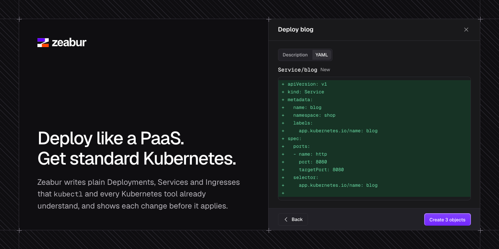

Zeabur 開源自建版釋出｜不是原服務原地復活，而是 pre-alpha Kubernetes PaaS
Threads 貼文稱 Zeabur 關站後，官方把服務重新打包、以 Apache-2.0 全面開源，可在 Linux 或 Kubernetes 自建。可公開驗證的部分是：`zeabur-oss/zeabur` 是公開、未封存的 GitHub repository，描述為「Self-hosted PaaS on your own Kubernetes」，授權為 Apache-2.0。

官方 repository 實際說了什麼
README 將 Zeabur 定位為自行託管的開源平台：部署在自己的 Kubernetes cluster 或本機，將 cluster 呈現為 projects 與 services，協助解釋問題並安全變更；它使用既有 Kubernetes objects，宣稱不保存自身狀態、不另設 database 或 custom resources。
可見的採用入口有三種：
- 單一 Linux server：installer 會設置 K3s 或 RKE2、Zeabur Identity 與 Zeabur。
- 既有 Kubernetes cluster：安裝 Helm chart，搭配 Zeabur Identity 登入。
- 個人 kubeconfig：`zeaburctl ui` 在本機 loopback 隨機埠開啟網頁，以目前 kubeconfig context 發出請求。
最重要的限制：目前仍是 pre-alpha
官方 README 明確標示版本為 pre-alpha 0.1.1，API 仍可能變動，且僅在少數 clusters 試用；不應指向無法承受故障的 cluster。這表示「一鍵自建」不能解讀成已具備商用代管服務等級的穩定性、備援、支援或相容保證。
因此，Threads 所說的「服務關站」與「原本所有服務完整重新打包」不能僅憑此 repo 推論；本次可確認的是一個由 zeabur-oss 組織公開、Apache-2.0 授權、以 Kubernetes 自管為核心的 pre-alpha 專案。
實務採用建議
- 先以隔離的測試 VM 或非關鍵 cluster 試裝，不要直接接正式 production。
- 自建後的 Kubernetes、節點、備份、identity、DNS、憑證、升級與資安責任都由自己承擔；「無自帶 database」不代表不需要備份或維運。
- 釘選 release／image digest，閱讀 release notes 與 SECURITY.md；不要只追 main branch。
- 先用低敏感服務驗證部署、rollback、觀測、權限與資料備援，再遷移有使用者資料或金流的服務。
來源與證據
- Threads 原貼：https://www.threads.com/@_xox._.xox._.xox._.xox._.xox_/post/DfD8l9vAX0L
- 官方 repository：https://github.com/zeabur-oss/zeabur
- GitHub API 擷取：repository created 2026-10-24、授權 Apache-2.0、非 archived。
- 本地圖片：PNG、1280×640、100,771 bytes、SHA-256 `cf05eaeb96c2488fd21652ab6c4b97f36f0964fc4607bbda569729143f365931`